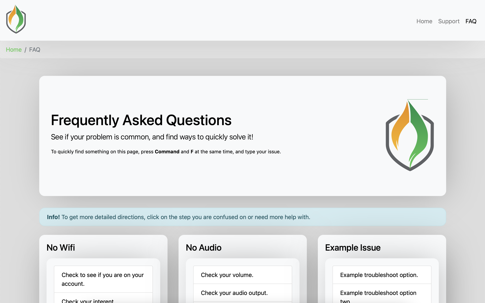

The Idea
How can we make technology more accessible to students and staff of Lynden High School? During my three year IT Internship at the high school, I began thinking about this question, and how I could act on it during my time with there. During my second year of the internship, the idea of a support website, or knowledge base, was sparked. I began to think about how to make it accessible to students and staff, how to make it easy for them to use, and how to make it easy for future people in my position to maintain.
Creating the Site
I began by creating a bare-bones structure of the site in Visual Studio Code. After a basic form of the site was built, I began working on how the site would function. I wrote pages with tutorials on how to connect to OneDrive, use OneNote, and more. And as a way to make things a bit easier for people in the future, I made a searchable folder where IT staff could place pdf documents with more support. This would let users simply type in the problem they are having, and have relevant documents show up quickly.
Final Product
The final product is viewable as a live demo on GitHub. For the best functionality, as GitHub Pages does not support php, download the repository and host it locally. The link to the site is below, and you can click here to access the GitHub Repo.
Links to View
Want to check out the videos?
View Demo Site